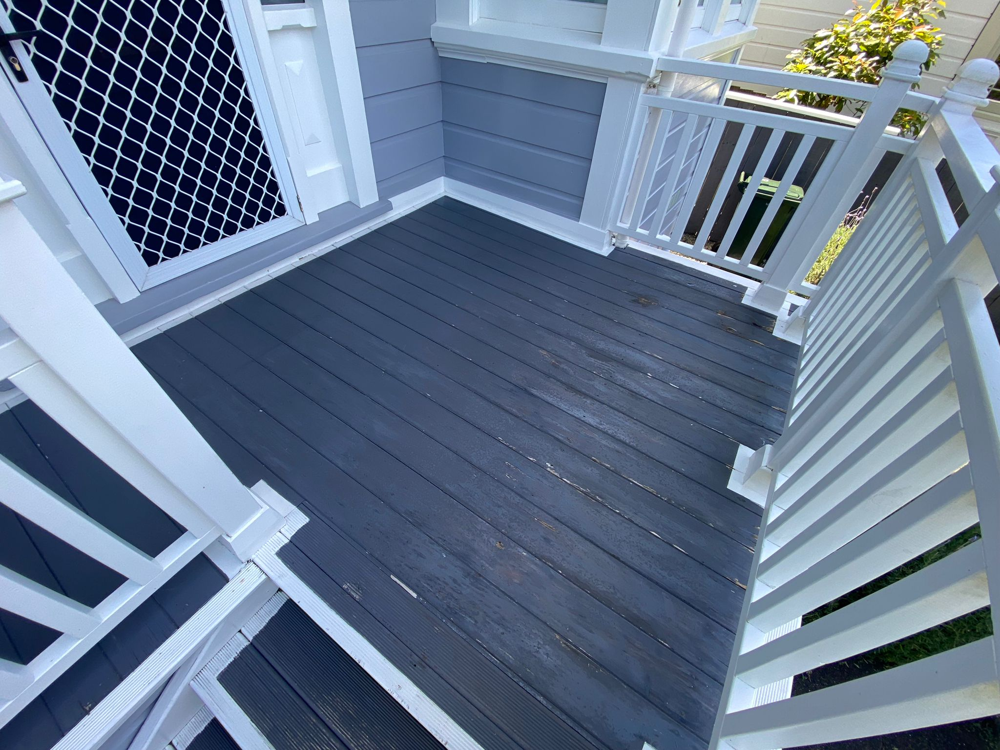
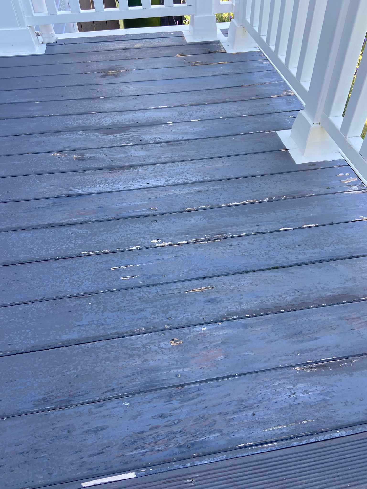
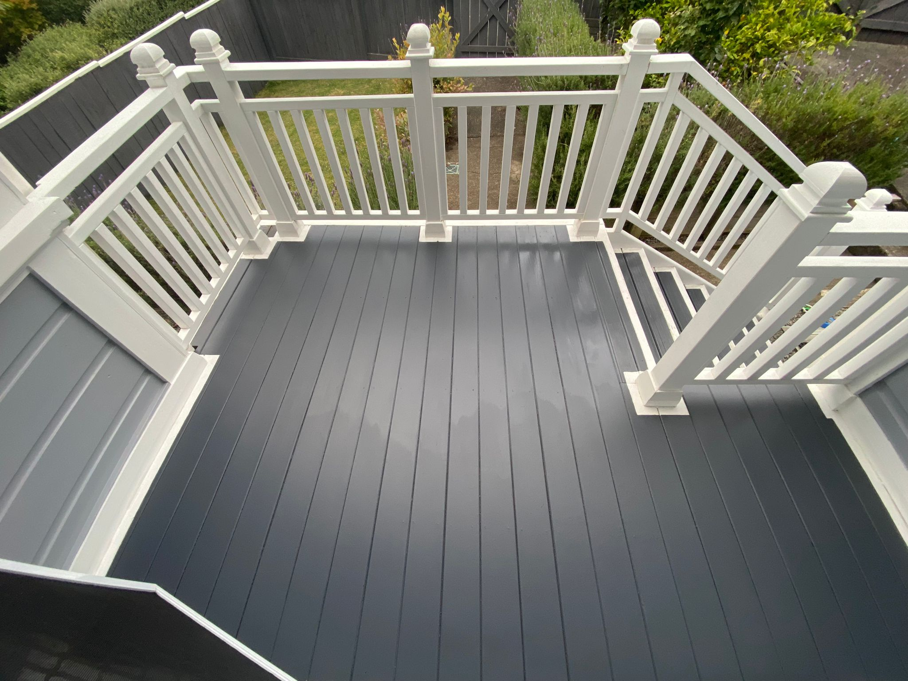

Created at: 2025-01-04
I haven't painted a fresh deck yet but will do it soon. I'll update this note then.
In the meanwhile, I have touched up an existing deck, what I called "Maintenance mode".
In this example, the deck was already painted, and only a new layer of paint was needed.
Steps:
Colour: British Paints Rhino Grey.
 
